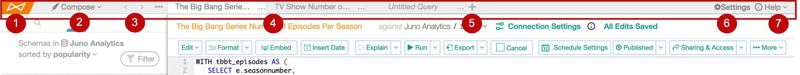
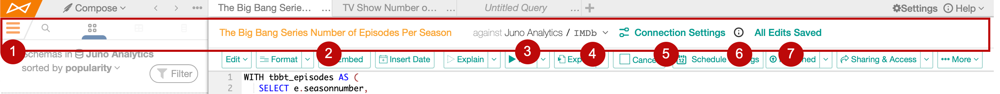
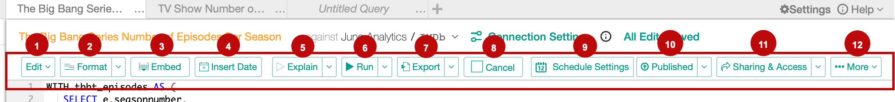
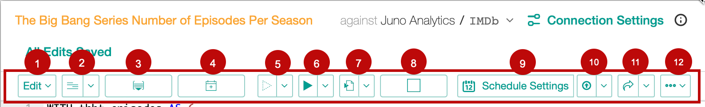
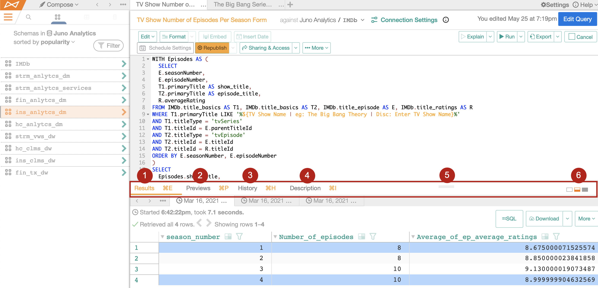
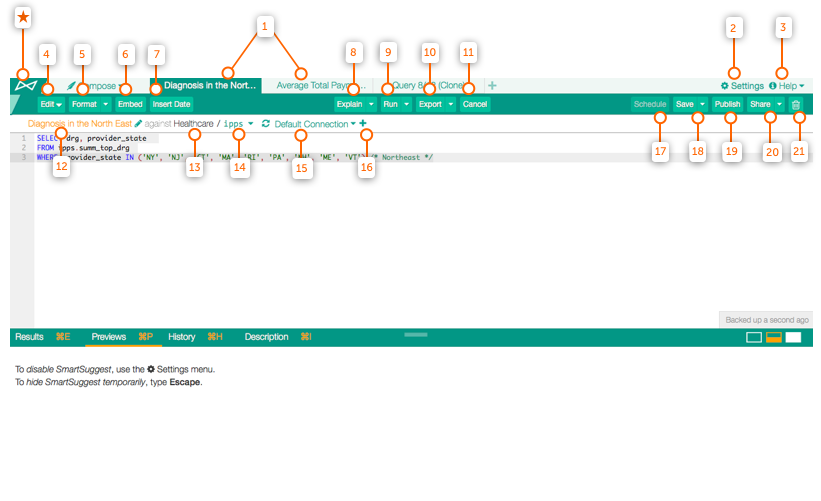
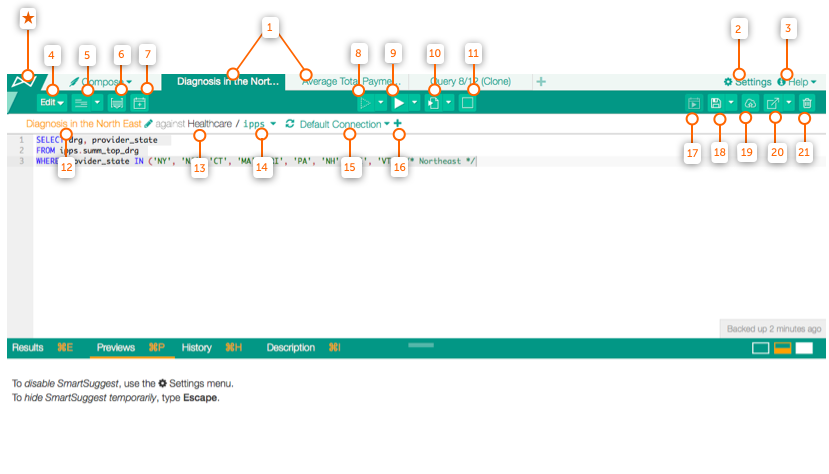

Compose Toolbars¶
Alation Cloud Service Applies to Alation Cloud Service instances of Alation
Customer Managed Applies to customer-managed instances of Alation
Compose has several toolbars to help you navigate the program. The top and middle toolbars assist you with opening and viewing queries, the bottom toolbar assists with writing and editing, and the Results toolbar shows you the Results, Preview, History, and Description of your query.
These toolbars have changed over time. References to earlier and later versions are mentioned throughout. View annotations at the bottom for 2021.4 and earlier versions.
Top-Level Toolbars¶
There are three toolbars at the top of the screen. The annotations in this section refer to versions 2022.1 and later.
Top Toolbar¶
Alation logo. Click to return to your Alation Catalog.
Compose menu. Here you can start a new query, open an existing query, open a new Compose window, or close all tabs.
Tab navigation. Click the left and right carets to activate the next tab in the respective direction. Click the three dots to select from a list of all open tabs.
Query tabs. Click a tab to activate it. Double click to rename the query. Hover over a tab and click the X to close the tab.
New tab button. Click the plus button to start a query in a new tab.
Settings. Click to open the Compose Settings page.
Help. Click the Help button to:
Open the Alation documentation site
Learn about keyboard shortcuts
View release notes
Start the Alation quick tour
Middle Toolbar¶
Hamburger menu. Click here to show or hide the data browser sidebar.
Query name. Click the text to rename it. (To add a description, click Description in the Results Toolbar.)
Data source. The name of the data source you are querying.
Schema. The name of the schema in the database you are querying. If there’s more than one schema in the database, click the schema name to choose another schema.
Connection Settings. Click to add, edit, or remove connection URIs and user credentials. For more details, click the following links:
2022.1 and later: Working with Data Source Connections
2021.4 and earlier: Switch and Remove Data Source Accounts
Active connection info. Hover over the information icon to see the current connection setting for the query.
Save status. Queries are saved automatically anytime you stop typing for five seconds. During this five second window, you’ll see a Save Now link you can click. Once the query is saved, it changes to read All Edits Saved. You can click All Edits Saved to see the query’s version history.
Bottom Toolbar¶
When the screen gets narrow enough, most of the button names become icons.
Edit button. Click the dropdown for the Find, Replace, Go to line, Undo, and Redo options.
Format button. Format your query in one click, apply indentation, change case, or toggle comments.
Embed button. Find and embed previously saved SQL code.
Insert Date button. Select a date from the calendar and insert it into your code.
Explain button. Explain runs the explain function of the connected database for information about how it will execute the SQL. Highlight a part of your code and click Explain to learn about that section. If you click without highlighting, Explain will run on the statement where your cursor is.
Run button. Click to execute your query. Learn more about run options.
Export button. Run and export your query results. Learn more about export options.
Cancel button. Stop your query from running after it is already in progress.
Schedule button. Click to schedule a query. Learn more about scheduling.
Publish button. Publish your query in the Catalog. Learn more about publishing your query.
Share button (versions 2022.4 and earlier)
Sharing & Access button (versions 2023.1 and later)
In versions 2023.1 and later, the button is only visible if you have edit or owner access to the query. You can perform the following with the Sharing & Access button:
Share your query
Turn it into a form
Jump directly from Compose to the query’s corresponding catalog page with View Query Page in versions 2023.1.6 and later.
Create an Excel Live Report
More button. Click to access the query’s version history, configure access, clone the query, or delete the query.
Much of the above functionality also has keyboard shortcuts.
Results Toolbar¶
The Results Toolbar is located below the Code Pane.
Results tab. Click the Results tab to view your query results. Select subtabs to view all previous runs. Click a row number in the Results pane to highlight and view the entire row.
If a row number is already highlighted, any other row number you click will also be highlighted.
If you click anywhere inside the Results pane, the row highlight disappears.
Click any cell inside the Results pane and only that individual cell is highlighted.
Preview tab. Preview your columns and tables as you code. Learn more about previews.
History tab. Click to view your query revision history. Learn more about code revision history.
Description tab. Add insights and information about your query in the Description tab.
Manual resize. Drag up or down to change the size of your results toolbar.
Resize tabs. Click Minimize, Split, or Maximize to navigate between your query and results.
Note
Tabs one through four can also be enabled using shortcut keys. The combination keys for your operating system will appear to the right of the tabs in yellow by either hovering over each individual tab or pressing command for Mac, Ctrl for Windows. Learn more about keyboard shortcuts.
2021.4 and Earlier¶
(*) Alation logo. Click to return to your Alation Catalog.
Query tabs. Query tabs. Drag to reorder them or double click a tab to view it.
Settings. Click to toggle SmartSuggest on and off or navigate to the Compose Settings page.
Help. If you made it here, you have likely found this one already! Click the Help button to visit this knowledge base.
Edit button. Traditional selection of word processing edit tools with keyboard shortcuts.
Format button. Format your query in one click or highlight sections to apply formatting options.
Embed button. Embed previously saved SQL code. Use the search bar to find any user’s saved query. Click Return to insert the code in your workspace.
Insert Date button. Select a date from the calendar and insert it into your code.
Explain button. Explain runs the explain function of the connected database for information about how it will execute the SQL. Highlight a part of your code and click Explain to learn about that section. If you click without highlighting, Explain will run on the statement where your cursor is.
Run button. Click to run the entirety of your code. Learn more about run options.
Export button. Run and export your query results. Learn more about export options.
Cancel button. Stop your query from running After it is already in progress.
Query name. The name of your query. Double-click the text to rename it.
Data source. The name of the data source you are querying.
Schema. The name of the schema in the database you are querying.
Connection button. The URI you will use to execute your query.
New database button. Click to add an alternative database URI. Learn more about adding DB connections here.
Schedule button. Click to schedule a query. Learn more about scheduling here.
Save button. Click to save a query. You can Save or Save as which will duplicate the query. When you save your query the first time, you can provide a Title and Description for your query. If you choose to write a description for your query at a later date, you need click Description in the Results Toolbar.
Publish button. Publish your query in Catalog. Learn more about publishing your query here.
Share button. Click to share your query.
Delete button. Delete your query.
When you are not full-screen, you will see the following. Functionality remains the same; however, most buttons will display only their corresponding icons instead of words.
Additionally, keyboard shortcuts exist for much of the above functionality.
The Results Toolbar functions the same in both earlier and later versions. Review the Results Toolbar section for reference.